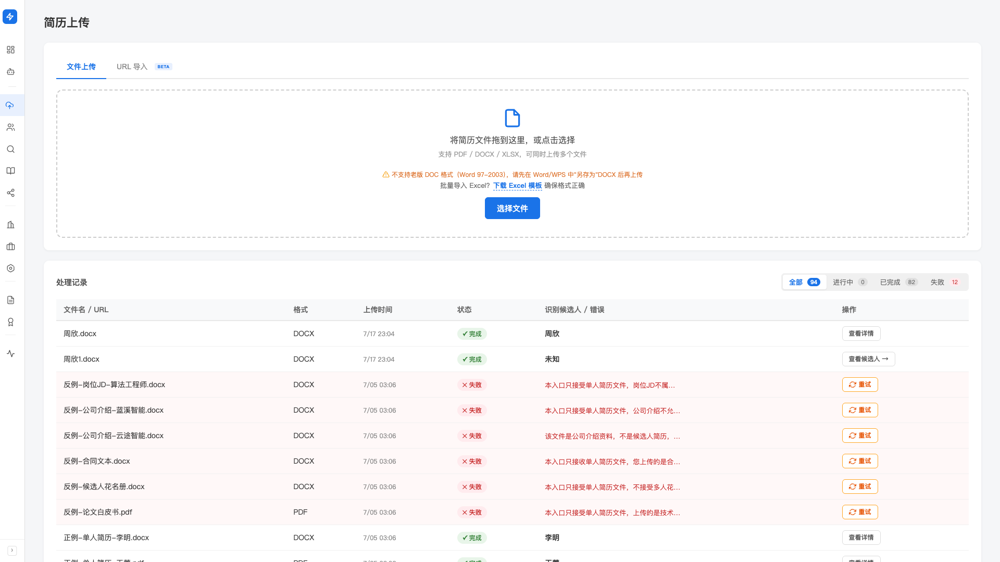
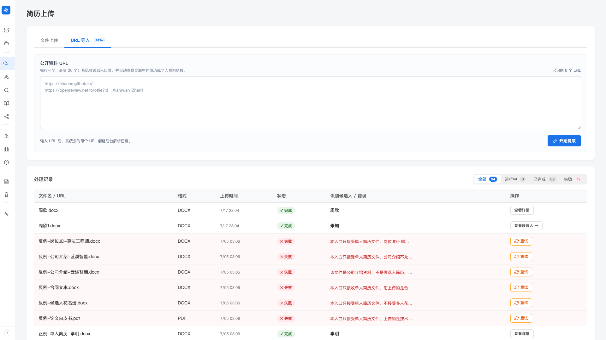
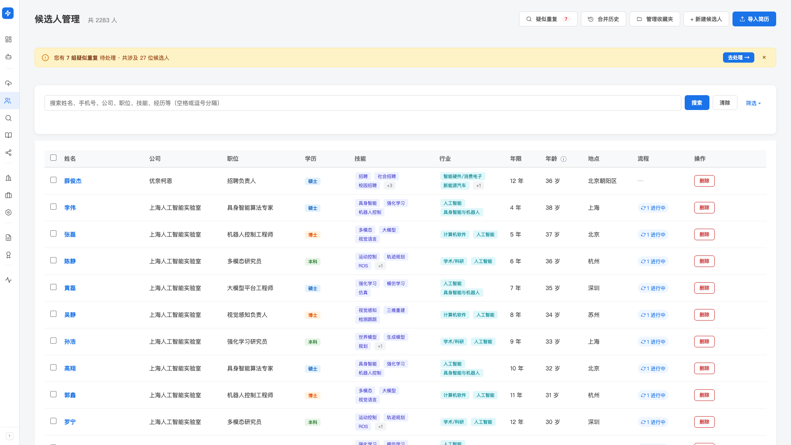

候选人库
候选人库是 Hunter 的核心数据底盘。所有候选人都集中在这里、本机存储，可被搜索、筛选、收藏， 并被「岗位匹配」「Mapping」「自动寻访」等其他能力直接调用。本文教你把候选人导进来、找出来、管起来。
产品里对应两个入口：左侧导航「寻访（找人）」分组下的 「简历上传」（把简历导进来）和「候选人管理」（找人、管人）。
5 种方式把候选人导进库
简历散在邮箱、微信、Drive、Excel 是日常——Hunter 接受 5 种入口， 你拿到候选人信息的哪种格式都能直接送进库，不必先手工整理。
PDF 简历
候选人最常发的格式。AI 解析出工作经历、技能、教育背景。
Word 简历
仅支持 .docx。老版 .doc（Word 97-2003）请先在 Word/WPS 中「另存为」.docx。
Excel 名单
批量导入候选人清单时最快。务必用系统提供的标准模板，避免列名对不上。
公开资料 URL
个人主页、作品集、OpenReview 等公开档案——粘 URL，系统抓取并解析。
手动创建
线下聊到的人、电话里拿到信息——在候选人管理页直接新建一条档案。
批量导入 PDF/Word/Excel 文件
这是日常用得最多的入口。
-
打开「简历上传」页面
两种进入方式任选：左侧导航点「简历上传」； 或在候选人管理页右上角点蓝色主按钮「导入简历」。
-
确认在「文件上传」标签页
简历上传页顶部有两个标签页：「文件上传」和「URL 导入」。默认就在「文件上传」。
-
拖入文件，或点「选择文件」
支持 PDF/DOCX/XLSX，可同时选多个。文件大小没有硬限制，常规简历都没问题。 页面下方的「处理记录」会实时显示每份文件的解析状态。
-
等待 AI 解析
每份简历需要 AI 解析，大约 5–30 秒。解析过程中你可以去做别的事，任务在后台跑。
-
查看结果，处理失败项
「处理记录」上方有状态过滤 pills：全部/进行中/已完成/失败。 切到「失败」筛选，可看到失败原因；条数 ≥ 2 时上方会出现「全部重试」按钮。

Hunter 不支持 Word 97-2003 的 .doc 旧格式。 如果候选人发来的是 .doc，请先在 Word 或 WPS 里「另存为」.docx 之后再上传。 上传 .doc 文件会被直接拦截并提示。
几十份到两百份是你可以等待的范围，泡杯咖啡的时间就跑完了。 1000 份以上的大批量，建议下班前丢任务、隔夜慢慢跑，不影响你的日常操作。
用 Excel 批量导入名单
客户给你一份 Excel，或你从别的系统导出一份名单——Excel 是最快进库的方式。但必须用标准模板。
-
下载标准模板
在「简历上传」页的拖入区下方，有一行提示：「批量导入 Excel？下载 Excel 模板 确保格式正确」。 点这个链接下载模板。
-
按模板填数据
每个候选人占一行。 姓名是必填，其他列（公司/职位/学历/行业/技能/工作年限 等）按你拿到的信息填，空着也行。
-
用「文件上传」标签页上传 .xlsx 文件
Hunter 会先做列名校验：列名必须与模板一致。 如果你用的是更早版本的模板（22 列旧格式），也兼容，不必重做。
-
看见「Excel 格式校验失败」弹窗就按提示改
列名不对时会弹出错误详情。 解决方案就两步：① 下载标准模板查看正确列名；② 修改 Excel 列头后重新上传。
Excel 里命中同名 + 同手机/邮箱的候选人，会进入重复候选人发现流程，不会重复创建。
通过公开 URL 导入
候选人有个人主页、Notion 简历、OpenReview 主页 等公开档案，直接粘 URL，系统会抓取并解析。
-
简历上传页 → 切到「URL 导入」标签页
这个标签页上有 Beta 标识，目前能力还在打磨。
-
每行粘一个 URL，最多 20 个
系统会读取入口页，并自动查找页面中的简历或个人资料链接。 右上角的「已识别 N 个 URL」会实时显示你粘了几条。
-
点「开始提取」
每个 URL 会创建一个后台解析任务，结果同样出现在下方的「处理记录」里。
-
抓不到时换种方式
如果页面是 JS 动态渲染、需要登录、或返回空内容，「处理记录」里会标失败。 这时改用 PDF 简历或手动创建更靠谱。

手动创建一条候选人
电话里聊到的人、线下活动认识的人——没简历也能直接建档。
-
候选人管理页 → 点「+ 新建候选人」
这个按钮在页面右上角操作区。点击会弹出新建候选人弹窗。
-
填基本信息
姓名必填，其他字段（英文名/电话/邮箱/性别/所在地/当前公司/当前职位/职级/工作年限/期望薪资）按需填。 填姓名时如果库里已有同名候选人，系统会给你列出来提示，避免重复创建。
-
补技能/行业/经历（可选）
技能、行业用逗号分隔填多个；教育背景、工作经历、项目经历都可以「+ 添加」多条。 后续都还能编辑，第一次建档不必填全。
-
保存
保存后这条候选人就进库了，可以立刻被搜索、被匹配、被加进收藏夹。
搜索：中英文、拼音、异形名都能找到
猎头日常最头疼的一类：你只记得候选人的某一种写法，但库里存的是另一种。 Hunter 在导入时会为每个候选人自动生成姓名变体， 你后续无论用哪种写法都能搜到。
Wang Xiaoming（标准拼音）、Xiaoming Wang（英文姓后）
候选人原始姓名是纯英文（如 Anna Patel）时，Hunter 会保留英文形式，不强制拼音化。
一次搜多个关键词
候选人管理页顶部的搜索框，提示文字写着：
搜索姓名、手机号、职位、技能、行业（支持逗号分隔多个关键词）。
所以你不止能搜姓名——手机号、职位、技能（如 Python、PyTorch）和行业标签也能搜，
多个关键词用逗号分隔。
列表筛选与排序
10 万级候选人库靠搜不够，经常要按维度筛。 筛选区在搜索框右边的「筛选」按钮，点开/收起，状态会记住。

可筛维度（10 项）
- 公司：输入即搜（默认给常见公司 Top 100）+ 模糊匹配，按当前/历任公司过滤
- 行业：标准化的 15 个一级标签 + 121 个二级标签
- 学历：博士/硕士/本科/大专 …
- 地点：当前所在城市
- 机会情况：是/否/固定看/未标注
- 流程状态：候选人在岗位推进中的当前阶段
- 职位：单值文本筛选
- 收藏夹：全部候选人 / 全部收藏夹 / 未收藏，或筛某个具体收藏夹
- 年限：数值范围
- 年龄：数值范围
已应用的筛选会在折叠态也显示为标签行，方便你看清当前筛了什么。 点标签上的 ✕ 删除某一组；右侧「清空所有筛选」一键还原。
筛选区是开是关这类长期偏好会持久化——下次打开 Hunter， 候选人管理页的样子和你上次关掉时一致。
组织候选人：收藏夹
Hunter 用收藏夹来组织候选人——比如「客户 A 在评估」「准备推荐 BCD 公司」「3 个月后再 followup」。 收藏夹支持多层级，灵活适应你团队的业务习惯。
批量加进收藏夹
-
在候选人管理页勾选多个候选人
每行最左边有 checkbox，表头有「全选本页」。勾选后下方会出现一条操作条：「已选本页 N 位候选人」。
-
点「移动到收藏夹」
弹出收藏夹选择器，选目标收藏夹后点「确认移动」。 如果候选人原来已在其他收藏夹，会自动从原收藏夹移出（不会同时在多个收藏夹里）。
-
需要移出时用「移出收藏夹」
同样勾选 + 点操作条上的「移出收藏夹」（红色 outline 按钮）。
管理收藏夹结构
候选人管理页右上角点「管理收藏夹」按钮，弹出抽屉。 在抽屉里可以新建、删除、重命名收藏夹，双击进入子层级管理。
单行操作
每个候选人在列表里占一行：
- 查看详情：点候选人姓名（蓝色链接）进入详情页（最常用）
- 删除：行尾「操作」列里的「删除」按钮，单行删除一个候选人
删除会彻底移除这条候选人记录。日常很少用，除非确认是导入错误。 想暂时不看到的候选人，用收藏夹组织管理，不要删除—— Hunter 的核心价值是「候选人沉淀越久越值钱」，半年前的候选人可能就是下一个岗位的最佳人选。
常见提示
请先在 Word 或 WPS 里「另存为」.docx，然后重新上传。Hunter 不支持 Word 97-2003 的二进制 .doc 格式。
大多数加密 PDF 不能被直接解析。请候选人重新发解密版，或自己解密后再上传。
最稳的做法是从上传页下载模板，把你的数据贴进模板， 而不是自己造列。错误弹窗里会列出具体不匹配的列名。